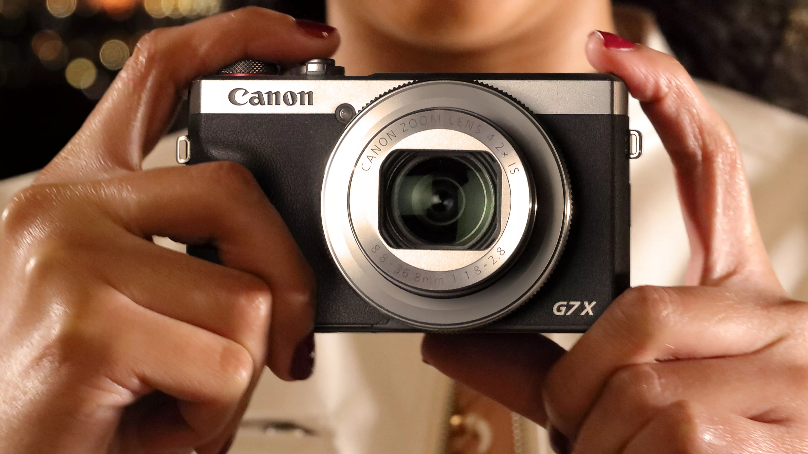
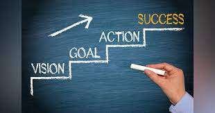
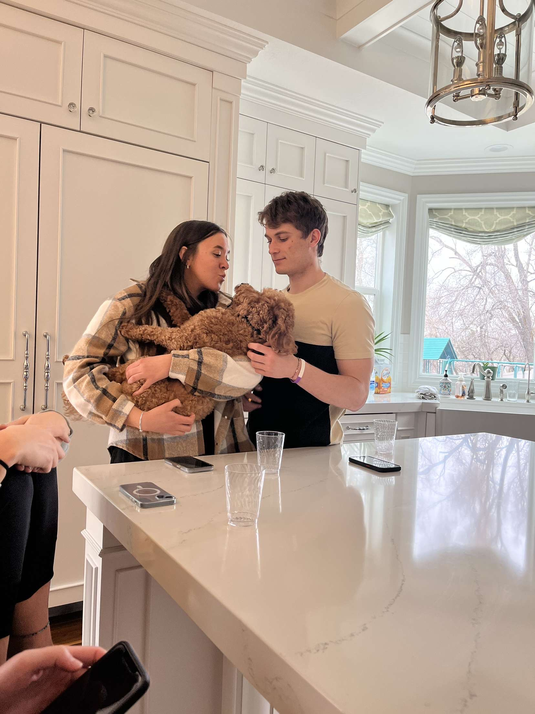

I love creating. I currently work as a video editor for a First Aid Company.
I love entreprenuership. One day, I will own my own business.
My business will make very positive impact in the world.

I am an ambitious and goal-driven. I find the most satisfaction when what
I am doing is inline with accomplishing my goals. I always create new goals.
I recently have made some summer goals. This summer I want to improve my golf skills.
This is for the sport of golf, but also because of business. I can make some quality
business connections when I play golf, and play it well. I also have a goal to make
$130,000 this summmer selling solar here in Utah. I have fitness goals to go to the gym
and lift weights every single day. I want to stay around 175-180 pounds.

I have a girlfriend named Kate. She is literally the best.
She is an important example me in so many ways. She is a spiritual giant. She is very driven for success.
Her confidence blows me away. Her beauty on the outside makes me smile every time I see her,
and her beauty on the inside resonates virtue. I love it. I love her. Also her eyes are fine.